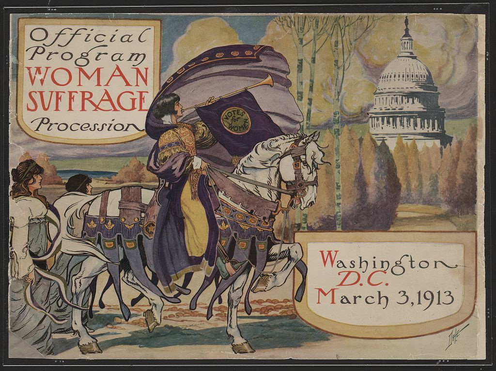

Image:
Title: Official program - Woman suffrage procession
Description: The picture shows a elaborate woman on a well decorated horse blowing a long horn. The horn has a banner that says 'votes for women', with the U.S. Capitol in the background.
Metadata: